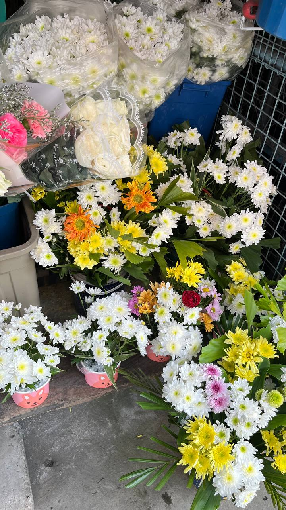
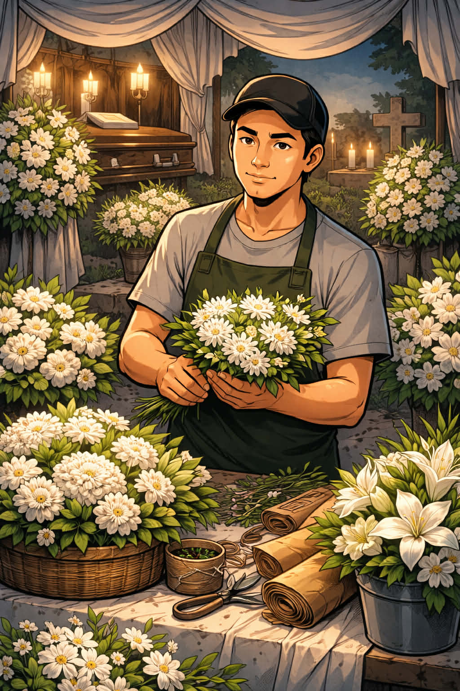
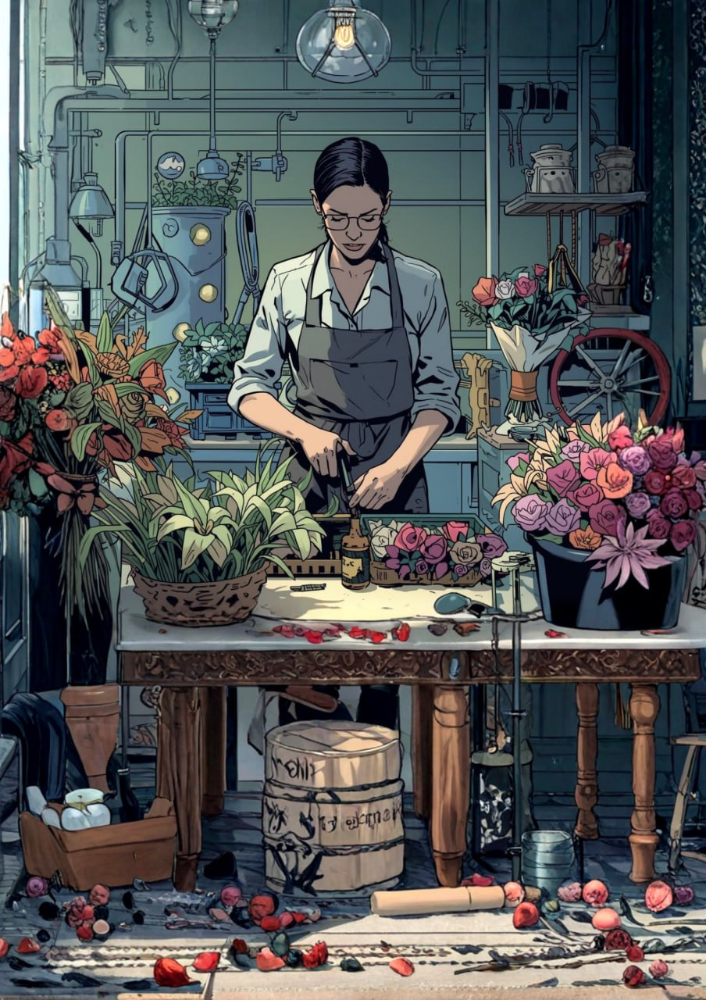

Danas

May iba't ibang pinagmulan ang pagbebenta ng bulaklak ng mga nagtitinda sa Daet, Camarines Norte. May mga nagsimula dahil sa impluwensya ng pamilya, mayroon ding natuto sa pamamagitan ng pagmamasid sa social media, at may ilan na nagsimula nang kusa sa tiyak na edad. Ipinapakita nito na ang hanapbuhay na ito ay maaaring maipasa sa pamilya o matutunan sa iba’t ibang paraan sa kasalukuyang panahon.
Malaking tulong sa kanilang pamumuhay ang pagbebenta ng bulaklak, ngunit nag-iiba ang kita depende sa okasyon. Sa mga panahong may selebrasyon tulad ng Mother’s Day, Valentine’s Day, at Undas, mas mataas ang kita, samantalang humihina ito sa mga karaniwang araw. Para sa ilan, nagsisilbi rin itong libangan at pandagdag sa pang-araw-araw na gastusin tulad ng kuryente at pagkain. Gayunpaman, may mga pagkakataon pa ring nagkukulang ang kita, lalo na kapag may mga bulaklak na nasisira o nalalanta.
Gawi

Kinabibilangan ng pag-order, pag-aayos, pagbababad sa tubig, at pagdi-display ang proseso ng paghahanda at pagbebenta ng bulaklak. Mahalaga ang maayos na pagbuo at pag-aayos ng mga bulaklak upang maging kaakit-akit sa mga mamimili. Iba-iba rin ang paraan ng pag-aayos depende sa okasyon, tulad ng paglalagay sa basket para sa patay at iba namang estilo para sa kaarawan. Nakatuon ang mga nagtitinda sa paulit-ulit na prosesong ito, pagbili, pagbababad, at maingat na pag-aayos, upang mapanatili ang ganda at pagiging kaaya-aya ng mga bulaklak.
Pangunahing nakatuon sa pag-aalaga at pagpapanatili ng kalidad ng kanilang mga produkto ang gawi ng mga nagtitinda ng bulaklak. Nakapokus sila sa mga regular na gawain tulad ng pag-aayos, pagbebenta, at pagpapanatili ng kasariwaan at kaayusan ng kanilang paninda.
Paniniwala

Limitado lamang ang mga paniniwala ng mga nagtitinda ng bulaklak. May ilan na naniniwala sa kahulugan ng kulay ng bulaklak—halimbawa, ang pula ay sumisimbolo sa pag-ibig, ang rosas para sa kabataan o kababaihan, at ang puti para sa kalinisan at kaluluwa.Wala silang partikular na ritwal na kaugnay sa kanilang hanapbuhay maliban sa mga karaniwang gawain upang mapanatiling sariwa at maganda ang mga bulaklak. Gayunpaman, para sa karamihan, wala namang partikular na paniniwala na direktang nakaaapekto sa kanilang hanapbuhay.
Pamahiin

May mahalagang papel ang mga pamahiin sa kanilang hanapbuhay. Karaniwan ang paniniwala sa “buena mano,” kung saan iniiwasan ang pagpapautang o pagpapabarya bago ang unang benta. Pinaniniwalaan nilang nakatutulong ito sa maayos na daloy ng kita. May iba pang kaugnay na paniniwala, tulad ng hindi agad pagsusukli sa unang mamimili at ang paniniwalang ang uri ng unang bumibili ay maaaring makaapekto sa mga susunod pang transaksyon.